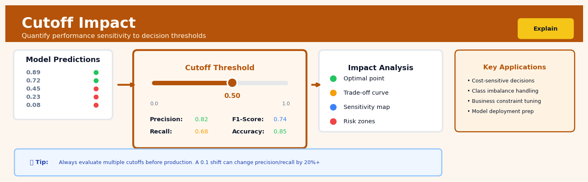

Cutoff Impact#


The most common mistake is setting the cutoff threshold based solely on maximizing accuracy without considering your actual business costs. If a false positive costs you 10 dollars but a false negative costs you 1000 dollars, your optimal threshold might be 0.85 instead of the default 0.5, even if it drops your accuracy by 5 percentage points. Always map your confusion matrix outcomes to real monetary or operational impact before locking in a threshold for production.
The 60-Second Version#
What it does: Cutoff Impact shows you what would have happened if you’d set your approval threshold differently—who would have been approved instead, and how outcomes would have changed.
When to use it: Use this when you’re making binary decisions based on a score (credit approval, hiring, university admissions) and need to understand how changing your cutoff would affect success rates, costs, or fairness across different groups.
What you get back: A quantified comparison showing how many more approvals, what the new success rate would be, and which subgroups would be most affected—so you can set thresholds that balance business goals with equity concerns.
Difficulty |
Moderate |
Typical runtime |
Seconds on 100K rows |
What you bring |
Historical decisions with scores, actual outcomes, and group labels |
What you get |
Projected outcome distributions under alternative cutoffs |
Heuristix bucket |
Explain — Causal Analysis & Interpretation |
The one thing to understand: Cutoff Impact assumes the people near your threshold behave similarly—it breaks down if there’s something fundamentally different about those just above versus just below your current line.
Learning Objectives#
After reading this chapter, a business user will be able to:
Identify situations where changing approval thresholds, credit limits, or eligibility criteria could create measurable business value and justify a Cutoff Impact analysis.
Interpret Cutoff Impact charts showing how different thresholds shift outcome distributions across subgroups, and translate these patterns into plain-language insights for executive stakeholders.
Recommend specific threshold changes with quantified trade-offs between competing objectives (e.g., approve 15% more applicants while accepting a 3% increase in default rate).
After reading this chapter, a data scientist will be able to:
Implement Cutoff Impact analysis by correctly simulating counterfactual decisions, calculating aggregate outcome shifts, and handling cases with missing scores or discontinuous decision rules.
Choose appropriate binning strategies and smoothing parameters that balance granularity against statistical noise, especially when working with small subgroups or sparse score regions.
Validate results by checking for score-outcome monotonicity violations, testing sensitivity to bandwidth choices, and diagnosing whether observed impacts reflect true causal effects or confounding from selection bias.
Overview#
Cutoff Impact is a causal inference technique that quantifies how changing a decision threshold affects the distribution of outcomes across a population. It belongs to the family of threshold-based causal analysis methods and is closely related to regression discontinuity designs, counterfactual simulation, and sensitivity analysis. The core purpose is to answer the question: “If we had used a different cutoff to make decisions, how would aggregate outcomes—and their distribution across subgroups—have changed?”
When to Use This#
Use Cutoff Impact analysis when:
You have a score-based decision process — Any situation where a continuous score (credit score, risk score, propensity score) determines a binary treatment (approve/reject, treat/don’t treat, contact/don’t contact) is a candidate for cutoff impact analysis.
You need to optimise the threshold for business objectives — When the current cutoff was set historically or arbitrarily, and you want to understand the profit, risk, or outcome implications of alternative thresholds.
You must quantify the fairness implications of threshold choices — When regulatory or ethical requirements demand understanding how different cutoffs affect protected groups differently (e.g., approval rate disparities across demographic segments).
You want to perform “what-if” analysis on historical decisions — When you have outcome data for decisions made under the current threshold and want to simulate what would have happened under alternative thresholds.
You are calibrating a new model against an existing decision process — When replacing one scoring model with another and need to find an equivalent cutoff that preserves certain business constraints (e.g., same approval rate, same default rate).
You need to justify threshold choices to regulators or auditors — When documentation of the decision rationale requires showing the impact of the chosen threshold versus alternatives.
Do NOT use Cutoff Impact analysis when:
The treatment effect is heterogeneous and you lack subgroup data — If the effect of crossing the threshold varies dramatically across individuals and you cannot model this heterogeneity, cutoff impact estimates will be misleading.
The score and outcome relationship is non-monotonic — Cutoff impact assumes that higher (or lower) scores correspond to systematically different outcomes; if this monotonicity fails, the analysis breaks down.
Selection effects dominate — If individuals who barely cross the threshold behave fundamentally differently from those who comfortably exceed it for reasons beyond the score, simple cutoff simulation will not capture these dynamics.
The counterfactual treatment is not well-defined — If changing the cutoff would also change the nature of the treatment itself (not just who receives it), cutoff impact analysis requires extension to handle this complexity.
Questions This Answers#
Evaluating Past Decisions#
If we had approved loans with a 680 credit score minimum instead of 720, how much additional revenue would we have captured last year?
Why did our approval rate drop 15% in Q3, and how many qualified customers did we turn away?
Which customer segments are we systematically rejecting with our current 85-point threshold, and what’s the financial impact?
Are we leaving money on the table by being too conservative with our underwriting cutoffs?
How many high-quality candidates did we pass on because of our GPA requirement, and where did they end up?
Optimizing Future Thresholds#
Should we lower our fraud detection threshold to catch more bad actors, and what would that do to our false positive rate?
If we raise the bar for vendor approval from 70 to 80, how much risk reduction do we actually get?
What’s the sweet spot for our customer health score cutoff that maximizes retention without overwhelming the support team?
Could we increase market share by 10% if we relaxed our eligibility criteria, and would those customers still be profitable?
What happens to our default rate if we approve everyone above a 650 score versus our current 700 threshold?
Assessing Fairness and Equity#
Is our 90th percentile performance bar disproportionately screening out candidates from certain demographics?
If we used the same credit threshold across all regions, which markets would see approval rates go up or down?
Are our current cutoffs creating unintended bias against specific customer segments, and how do we quantify that impact?
Would lowering our minimum order value from \(500 to \)250 improve access for small businesses without hurting our margins?
How It Works#
Imagine you’re the admissions director at a competitive university that accepts students if their test score is 1200 or above. One day, the dean asks: “What if we had set the bar at 1150 instead? How many more students from rural areas would we have admitted?” You can’t rewind time, but you can look at your applicant records, find everyone who scored between 1150 and 1199, check their backgrounds, and calculate exactly how the admitted class composition would have changed. That’s the essence of Cutoff Impact—using the historical record of who was just above and just below your decision threshold to simulate what would have happened under a different rule.
CURRENT STATE (cutoff = 1200) SIMULATED STATE (cutoff = 1150)
Applicants by Score Applicants by Score
1250 ████ → Admitted 1250 ████ → Admitted
1220 ███ → Admitted 1220 ███ → Admitted
1200 ██ → Admitted 1200 ██ → Admitted
┃ CURRENT CUTOFF ┃
1180 ███ → Rejected ┐ 1180 ███ → Admitted ← STATUS CHANGES
1160 ██ → Rejected │ IMPACT 1160 ██ → Admitted ← STATUS CHANGES
1150 █ → Rejected ┘ ZONE 1150 █ → Admitted ← STATUS CHANGES
┃ ┃ NEW CUTOFF
1140 ██ → Rejected 1140 ██ → Rejected
1120 ███ → Rejected 1120 ███ → Rejected
Original outcome: Counterfactual outcome:
• 5 admitted • 8 admitted
• 2 from rural areas (40%) • 4 from rural areas (50%)
Step 1: Identify the decision threshold. The technique starts by pinpointing the exact cutoff your organization currently uses to make yes/no decisions. This could be a credit score for loan approval, a risk assessment for medical treatment, or a performance rating for promotion. The threshold is where decisions flip from one outcome to another.
Step 2: Collect historical decision data. Gather records showing the score or metric for every person or case, what decision was made, and what actually happened to them afterward. You need both people above the cutoff (who got accepted, approved, or selected) and people below it (who didn’t).
Step 3: Define alternative cutoffs to test. Choose one or more “what if” thresholds—maybe lower by 50 points, higher by 100 points, or several variations. These represent the alternative policies you want to evaluate.
Step 4: Identify who would change status. For each alternative cutoff, find everyone who would flip from rejected to accepted (or vice versa) under the new rule. These are the people in the “impact zone” between the old and new thresholds.
Step 5: Calculate new aggregate outcomes. Add up what the total results would look like: How many total acceptances? What’s the average success rate? How does the demographic composition shift? This step creates the counterfactual scenario—the world that would have existed under different rules.
Step 6: Compare across subgroups. Break down the impact by relevant categories—geography, demographics, product lines, whatever matters to your stakeholders. This reveals whether changing the cutoff would affect different groups equally or create disparities.
The key insight: By examining the people clustered near your current threshold—who are nearly identical except for being barely above or below the line—you can credibly simulate alternative policies without needing to actually run a randomized experiment or build a complex predictive model.
The Intuition#
Imagine you are a loan officer at a bank. Your institution approves loans for applicants with a credit score of 650 or above. Every day, you see people with scores of 649 get rejected and people with scores of 650 get approved. The difference between these two groups is, in some sense, arbitrary—the people at 649 are not fundamentally different from those at 650. Yet the consequences of this single-point distinction are enormous: one group gets capital to start businesses or buy homes, and the other does not.
Cutoff Impact analysis asks: What if the line had been drawn somewhere else? If the threshold were 620 instead of 650, more people would be approved—but who are these additional people? What are their expected default rates? How does this change the bank’s expected profit? And crucially, does lowering the threshold disproportionately help or harm certain demographic groups?
The key insight is that we can often observe outcomes for people on both sides of the current threshold, and we can use this information to simulate what would have happened under alternative thresholds. For people currently above the threshold who would remain above it under the new threshold, nothing changes. For people currently above but who would fall below a higher threshold, we can estimate what would have happened if they had been rejected. For people currently below who would move above under a lower threshold, we can estimate what would have happened if they had been approved.
This is fundamentally a counterfactual reasoning exercise. We are not simply counting how many people would cross the new threshold; we are estimating the causal impact of that crossing on outcomes. This requires either strong assumptions (that the score perfectly captures treatment-relevant heterogeneity) or additional modeling (to estimate heterogeneous treatment effects). The power of the method lies in its ability to translate a continuous score into actionable, quantified business impact across the full range of possible decision boundaries.
The Mathematics#
Problem Setup and Notation#
Let \(S_i \in \mathbb{R}\) denote the score for individual \(i\), and let \(c \in \mathbb{R}\) denote the cutoff threshold. The treatment indicator under cutoff \(c\) is:
Let \(Y_i(1)\) denote the potential outcome if individual \(i\) receives treatment, and \(Y_i(0)\) denote the potential outcome if they do not. The observed outcome under cutoff \(c\) is:
The aggregate outcome under cutoff \(c\) is:
The cutoff impact of moving from threshold \(c_0\) to threshold \(c_1\) is:
Identifying Assumptions#
To estimate \(\Delta(c_0, c_1)\) from observational data, we require the following assumptions:
Assumption 1 (Unconfoundedness conditional on score): The potential outcomes are independent of treatment assignment conditional on the score:
Assumption 2 (Monotonicity in score): The expected potential outcomes are monotonic functions of the score. Specifically:
Assumption 3 (Stable Unit Treatment Value Assumption - SUTVA): The potential outcomes for individual \(i\) do not depend on the treatment status of other individuals:
Assumption 4 (Overlap): For any score value \(s\) in the support of \(S\), both treatment and control outcomes are potentially observable:
Estimation Strategy#
Under the current cutoff \(c_0\), we observe:
\(Y_i(1)\) for individuals with \(S_i \geq c_0\)
\(Y_i(0)\) for individuals with \(S_i < c_0\)
To estimate the impact of a new cutoff \(c_1\), we must estimate the unobserved potential outcomes. Define the conditional expectation functions:
These functions can be estimated using regression on the observed data:
The estimated aggregate outcome under cutoff \(c_1\) is:
Decomposition of Cutoff Impact#
The total cutoff impact can be decomposed into contributions from different score regions. For \(c_1 < c_0\) (lowering the threshold):
The individual treatment effect for an individual at score \(s\) is:
Thus:
Subgroup Impact Analysis#
For a subgroup defined by membership indicator \(G_i \in \{0, 1\}\), the subgroup-specific cutoff impact is:
The disparate impact ratio under cutoff \(c\) is:
Edge Cases and Degenerate Conditions#
Case 1: No observations in extrapolation region. If \(c_1\) is set such that \(c_1 < \min(S_i)\) or \(c_1 > \max(S_i)\), the estimate requires pure extrapolation and should be flagged as unreliable.
Case 2: Sparse data near the threshold. If few observations exist near \(c_0\) or \(c_1\), the estimates of \(\mu_1(s)\) and \(\mu_0(s)\) in these regions will have high variance.
Case 3: Non-monotonic relationships. If the observed relationship between \(S\) and \(Y\) is non-monotonic, the monotonicity assumption is violated, and the extrapolations may be severely biased.
Relationship to Regression Discontinuity#
Cutoff Impact is related to the sharp regression discontinuity design (RDD). In RDD, the focus is on estimating the local average treatment effect (LATE) at the threshold:
Cutoff Impact extends this by estimating treatment effects across the full score distribution, not just at the discontinuity point. However, this extension requires stronger assumptions (functional form for \(\mu_1\) and \(\mu_0\)) than local RDD estimation.
Understanding the Mathematics#
Understanding the Mathematics#
The Cutoff Decision Rule#
Read it aloud: “The decision for individual i equals one if their score is greater than or equal to the cutoff c, and zero otherwise.”
What each symbol means:
\(D_i\) = The decision made for person i (1 = approved/selected, 0 = rejected)
\(\mathbb{1}(\cdot)\) = An indicator function that returns 1 when the condition inside is true, 0 when false
\(S_i\) = The score assigned to person i (could be a credit score, risk assessment, test result)
\(c\) = The cutoff threshold we’re using to make decisions
\(\geq\) = Greater than or equal to
A concrete numerical example: A bank reviews loan applications. Applicant Maria has a credit score of 680. The bank’s current cutoff is 650. Since 680 ≥ 650, the indicator function returns 1. Maria gets approved (\(D_{\text{Maria}} = 1\)). Applicant James has a score of 620. Since 620 < 650, his indicator returns 0. James is rejected (\(D_{\text{James}} = 0\)).
Why this equation matters: This formalizes how we convert continuous measurements into binary yes/no decisions—the foundation of threshold-based systems that affect millions of people daily.
Expected Outcome Under a New Cutoff#
Read it aloud: “The outcome for person i under a new cutoff c-prime equals their observed outcome, plus the change in their decision status multiplied by their individual treatment effect.”
What each symbol means:
\(Y_i(c')\) = What would happen to person i under the alternative cutoff
\(Y_i^{\text{obs}}\) = What actually happened to person i under the current cutoff
\(D_i(c')\) = Would person i be approved under the new cutoff? (1 or 0)
\(D_i(c)\) = Was person i approved under the current cutoff? (1 or 0)
\(\tau_i\) = The treatment effect: how much the decision changes person i’s outcome
A concrete numerical example: Under the current 650 cutoff, James was rejected and defaulted on informal loans, losing \(3,000 (\)Y_{\text{James}}^{\text{obs}} = -3000\(). If we lower the cutoff to 600, James would be approved: \)D_{\text{James}}(600) = 1\( while \)D_{\text{James}}(650) = 0\(. Research suggests approval improves his outcome by \)4,500 (\(\tau_{\text{James}} = 4500\)). Therefore: \(Y_{\text{James}}(600) = -3000 + (1 - 0) \times 4500 = +1500\). James would gain \(1,500 instead of losing \)3,000.
Why this equation matters: This is the heart of counterfactual reasoning—it lets us estimate what would have happened to real people under policies we didn’t actually implement.
Aggregate Impact on a Subgroup#
Read it aloud: “The impact on subgroup g of changing from cutoff c to c-prime equals the average difference in outcomes for all people in that subgroup.”
What each symbol means:
\(\Delta_g\) = The aggregate change in outcomes for subgroup g
\(N_g\) = The number of people in subgroup g
\(\sum_{i \in g}\) = Sum over all individuals who belong to subgroup g
\(Y_i(c')\) = Person i’s outcome under the new cutoff
\(Y_i(c)\) = Person i’s outcome under the old cutoff
A concrete numerical example: A bank evaluates changing the cutoff from 650 to 600 for first-time borrowers (250 people). Under the current cutoff, this group collectively lost \(500,000. Under the 600 cutoff, simulations show they would collectively gain \)200,000. The impact is: \(\Delta_{\text{first-time}}(650, 600) = \frac{1}{250}[200{,}000 - (-500{,}000)] = \frac{700{,}000}{250} = 2{,}800\). Each first-time borrower gains an average of $2,800.
Why this equation matters: Decision-makers need population-level summaries, not individual predictions—this equation translates millions of micro-level changes into actionable insights about who wins and who loses.
The Big Picture#
The mathematics transforms a simple question—“What if we moved the cutoff?”—into a rigorous quantification problem. We start by formalizing how thresholds create decisions, then estimate what would happen to each individual if their decision changed, and finally aggregate those individual counterfactuals into subgroup-level impacts. This approach was chosen because cutoff decisions are fundamentally discrete (you’re either in or out), but their effects are continuous and heterogeneous across people. Simpler methods like linear regression miss the discontinuous jump at the threshold and ignore distributional consequences. The mathematical essence: we’re computing the difference between two parallel universes—one where we used cutoff A, another where we used cutoff B—and measuring who gained, who lost, and by how much.
Python Implementation#
import numpy as np
import pandas as pd
from sklearn.linear_model import LogisticRegression
from sklearn.isotonic import IsotonicRegression
import matplotlib.pyplot as plt
# Set random seed for reproducibility
np.random.seed(42)
# =============================================================================
# Generate synthetic credit scoring data
# =============================================================================
n_samples = 10000
# Generate credit scores (normally distributed, scaled to 300-850 range)
raw_scores = np.random.normal(0, 1, n_samples)
credit_scores = 575 + 100 * raw_scores # Mean ~575, SD ~100
credit_scores = np.clip(credit_scores, 300, 850)
# True probability of default decreases with credit score
# Logistic relationship with some noise
true_default_prob = 1 / (1 + np.exp(0.03 * (credit_scores - 550)))
# Current cutoff is 650
current_cutoff = 650
treatment = (credit_scores >= current_cutoff).astype(int)
# Generate outcomes
# For treated (approved): observe whether they defaulted
# For untreated (rejected): observe counterfactual outcome (what if approved)
default_if_approved = np.random.binomial(1, true_default_prob)
# Observed outcome: default for approved, NaN for rejected (in real data)
# Here we keep both for simulation purposes
observed_default = np.where(treatment == 1, default_if_approved, np.nan)
# Create demographic group (for fairness analysis)
# Group 1 has slightly lower scores on average
group = np.random.binomial(1, 0.3, n_samples) # 30% in protected group
credit_scores = credit_scores - 20 * group # Protected group has lower scores
# Recalculate treatment under current cutoff
treatment = (credit_scores >= current_cutoff).astype(int)
# Create DataFrame
df = pd.DataFrame({
'credit_score': credit_scores,
'treatment': treatment,
'default_if_approved': default_if_approved,
'true_default_prob': true_default_prob,
'group': group
})
print("="*60)
print("DATA SUMMARY")
print("="*60)
print(f"Total observations: {len(df)}")
print(f"Current cutoff: {current_cutoff}")
print(f"Approval rate: {df['treatment'].mean():.2%}")
print(f"Score range: {df['credit_score'].min():.0f} - {df['credit_score'].max():.0f}")
print()
# =============================================================================
# Estimate conditional outcome functions
# =============================================================================
# For approved applicants, fit model of default probability
approved = df[df['treatment'] == 1].copy()
# Use isotonic regression for monotonic estimate
iso_reg = IsotonicRegression(increasing=False, out_of_bounds='clip')
iso_reg.fit(approved['credit_score'], approved['default_if_approved'])
# Predict default probability for all score levels
df['predicted_default_prob'] = iso_reg.predict(df['credit_score'])
print("="*60)
print("MODEL FIT")
print("="*60)
print(f"Observed default rate (approved): {approved['default_if_approved'].mean():.2%}")
print(f"Predicted default rate (all): {df['predicted_default_prob'].mean():.2%}")
print()
# =============================================================================
# Cutoff Impact Analysis
# =============================================================================
def calculate_cutoff_impact(df, cutoffs, revenue_per_good=1000, loss_per_default=5000):
"""
Calculate the impact of different cutoffs on key metrics.
Parameters:
-----------
df : DataFrame with credit_score and predicted_default_prob
cutoffs : array of cutoff values to evaluate
revenue_per_good : revenue from a non-defaulting loan
loss_per_default : loss from a defaulting loan
Returns:
--------
DataFrame with metrics for each cutoff
"""
results = []
for cutoff in cutoffs:
# Who would be approved under this cutoff?
approved_mask = df['credit_score'] >= cutoff
n_approved = approved_mask.sum()
approval_rate = n_approved / len(df)
# Expected default rate among approved
if n_approved > 0:
expected_default_rate = df.loc[approved_mask, 'predicted_default_prob'].mean()
expected_defaults = (df.loc[approved_mask, 'predicted_default_prob']).sum()
expected_good = n_approved - expected_defaults
else:
expected_default_rate = 0
expected_defaults = 0
expected_good = 0
# Expected profit
expected_profit = (expected_good
## Visualisations


## Using This in Heuristix
### What You'll Need
The Cutoff Impact node expects a dataset where each row represents an individual or case that was scored and classified based on some threshold. Think loan applications, hiring decisions, or fraud detection cases.
**Required columns:**
| Column Type | Description | Example |
|------------|-------------|---------|
| Score | Continuous variable used for decision-making | Credit score, risk score, test score |
| Current Cutoff | Binary indicator of actual decision made | Approved/Denied, Hired/Not Hired |
| Outcome | The result you care about | Loan repaid, Job performance, Fraud occurred |
| Group (optional) | Subpopulation identifier | Department, Region, Demographic group |
**Example input data:**
| applicant_id | credit_score | approved | repaid | region |
|--------------|--------------|----------|---------|---------|
| 001 | 680 | 1 | 1 | North |
| 002 | 620 | 0 | — | South |
| 003 | 710 | 1 | 0 | North |
The node will simulate what would have happened under different cutoff rules and compare outcomes across the population.
### Configuration Parameters
| Parameter | What It Does | Default | When to Change It |
|-----------|--------------|---------|-------------------|
| **Cutoff Range** | Min and max threshold values to simulate | Data min/max | Narrow to realistic decision boundaries (e.g., 600–750 for credit) |
| **Step Size** | Granularity of cutoff increments tested | 10 points | Use smaller steps (5) for precision near critical thresholds; larger (25) for quick exploration |
| **Outcome Type** | Whether higher outcomes are better or worse | Positive | Set to "Negative" for risk/cost metrics like default rate |
| **Baseline Cutoff** | The current threshold for comparison | Auto-detected | Override if historical cutoff differs from data |
| **Subgroup Analysis** | Which categorical column to analyze separately | None | Always set this when equity or fairness matters |
| **Confidence Level** | Statistical confidence for uncertainty bands | 95% | Lower to 90% for exploratory work; keep 95% for reporting |
### What You'll Get Back
**Added columns in output data:**
- `simulated_decision_at_[X]` — Binary decision under each tested cutoff value
- `counterfactual_outcome` — Predicted outcome under alternative threshold
- `impact_category` — Whether individual would be affected by cutoff change
**Visual outputs:**
- **Cutoff Impact Curve**: Shows how total positive outcomes change across threshold values. The peak reveals your optimal cutoff.
- **Subgroup Comparison**: Side-by-side impact curves when group analysis is enabled, revealing disparate effects.
- **Population Flow Diagram**: Sankey-style chart showing how many individuals move between decision categories.
**Metrics panel displays:**
- Optimal cutoff value (maximizes desired outcome)
- Net impact of changing from baseline
- Subgroup-specific acceptance rates and outcome rates at each threshold
### Quick Start
1. **Connect your scored dataset** to the Cutoff Impact node input
2. **Map your columns**: Select score variable, current decision, and outcome
3. **Set cutoff range** to realistic bounds (check your score distribution first)
4. **Enable subgroup analysis** if fairness assessment matters
5. **Run the node** and examine the impact curve for the optimal threshold
6. **Compare subgroups** using the comparison chart to check for disparate impact
### Connecting Downstream
**Common next steps:**
- **Sensitivity Analysis node** → Test how robust your optimal cutoff is to outcome measurement error
- **Policy Simulator** → Model operational changes from implementing new threshold
- **Fairness Metrics node** → Formal statistical tests for discrimination
- **Report Builder** → Package findings for stakeholders with auto-generated narrative
### Pro Tips from the Field
**Check your counterfactuals carefully.** The node assumes individuals near the cutoff are comparable—this breaks down if your score has big gaps. Look at the distribution first.
**Start wide, then zoom in.** Run with large step sizes (20-25) initially to spot the interesting range, then re-run with fine steps (5) around the promising threshold values.
**Don't ignore the tails.** The optimal cutoff mathematically might be extreme (reject 95% of applicants). Always apply business constraints—set realistic ranges that reflect operational capacity.
**Subgroup analysis is non-optional for consequential decisions.** If your decision affects people's lives, always enable group analysis. You'll often find the "optimal" overall cutoff is terrible for specific populations.
**Connect to your business metric.** The outcome variable drives everything. If you care about profit, make sure you're measuring profit per decision, not just approval rates or raw success counts.
## Config Recipes
### Recipe 1: Quick Exploration
- **When to use:** Initial data investigation when you need fast answers about whether changing your cutoff would matter at all before investing in rigorous analysis.
- **Settings:**
| Parameter | Value | Why |
|-----------|-------|-----|
| `n_bootstrap` | 0 | Skip uncertainty quantification entirely |
| `alternative_cutoffs` | [p25, p50, p75] | Three quantile-based cutoffs cover the range |
| `subgroup_analysis` | False | Delays distributional questions for now |
| `outcome_aggregation` | "mean" | Single summary statistic is fastest |
- **What you get:** Point estimates of aggregate outcome changes for three alternative scenarios, generated in seconds.
- **Trade-off:** No confidence intervals, no fairness metrics, and no way to know if differences are statistically meaningful.
### Recipe 2: Production-Ready Audit
- **When to use:** Documenting cutoff impact for regulatory review, executive reporting, or publications where methodological rigor will be scrutinized.
- **Settings:**
| Parameter | Value | Why |
|-----------|-------|-----|
| `n_bootstrap` | 1000 | Stable 95% confidence intervals |
| `alternative_cutoffs` | [-0.05, -0.02, +0.02, +0.05] | Relative shifts around current threshold |
| `subgroup_analysis` | True | Enables disparate impact detection |
| `stratify_bootstrap` | True | Preserves group proportions in resampling |
| `outcome_aggregation` | ["mean", "median", "p10", "p90"] | Full distributional view |
| `sensitivity_check` | "unobserved_confounding" | Tests robustness to hidden variables |
- **What you get:** Comprehensive report with uncertainty bounds, subgroup breakdowns, and robustness checks suitable for external validation.
- **Trade-off:** Runtime increases 50-100x compared to quick exploration; requires larger sample sizes (n > 5000 recommended).
### Recipe 3: Sparse Positive Outcomes
- **When to use:** Your outcome is rare (e.g., <5% conversion rate, adverse events, or policy violations) and standard analysis produces unstable estimates.
- **Settings:**
| Parameter | Value | Why |
|-----------|-------|-----|
| `outcome_aggregation` | "sum" | Total count is more stable than rate for rare events |
| `min_group_size` | 100 | Prevents subgroup analysis on cells with few positives |
| `bootstrap_method` | "stratified_by_outcome" | Ensures sufficient positive cases in each resample |
| `alternative_cutoffs` | [p60, p70, p80, p90] | Focus on restrictive thresholds where rates stabilize |
| `effect_metric` | "absolute_change" | Percentage changes mislead with near-zero baselines |
- **What you get:** Reliable estimates focused on how many additional rare events occur, not unreliable rate ratios.
- **Trade-off:** Cannot analyze very permissive cutoffs where outcome sparsity breaks down completely.
### Recipe 4: Pre-Launch Harm Reduction
- **When to use:** You're deploying a new decision system and want to find the cutoff that minimizes worst-case harm to vulnerable groups before going live.
- **Settings:**
| Parameter | Value | Why |
|-----------|-------|-----|
| `optimization_target` | "min_max_group_disparity" | Explicitly minimize the worst subgroup outcome gap |
| `alternative_cutoffs` | Grid search over 20 points | Dense exploration of threshold space |
| `constraint` | "current_aggregate >= 0.95" | Maintain overall performance within 5% |
| `protected_attributes` | List all groups | Consider intersectional combinations |
| `outcome_aggregation` | "mean" | Simple metric for optimization |
- **What you get:** The specific cutoff value that satisfies your fairness constraint while preserving overall performance.
- **Trade-off:** Requires defining "harm" quantitatively and deciding how much aggregate performance you'll sacrifice for equity.
## Business Applications
**Financial Services**
A mid-sized UK mortgage lender was rejecting 40% of applicants using a credit score cutoff of 680, missing profitable customers while competitors gained market share. By applying Cutoff Impact analysis, they simulated lowering the threshold to 650 and discovered they could approve an additional 2,400 loans annually with a default rate increase of only 0.3 percentage points—well within their risk appetite. The analysis revealed that minority applicants disproportionately clustered just below the old cutoff, meaning the change also reduced demographic disparities in approval rates by 23% while generating £3.2M in additional annual interest income.
**Retail & E-commerce**
An online fashion retailer with 800,000 SKUs was automatically marking items as "out of stock" when inventory fell below 5 units, creating artificial scarcity but also losing sales. Cutoff Impact quantified that lowering the threshold to 2 units would prevent 18,000 unnecessary stockout labels per month, lifting conversion rate from 2.1% to 2.7% on affected products and generating £420,000 in recovered monthly revenue. The analysis also showed that luxury items could sustain a 1-unit threshold while fast-fashion basics needed 3 units, enabling segment-specific optimization.
**Healthcare**
A regional hospital network was flagging patients for diabetes intervention programs using an HbA1c cutoff of 6.5%, but budget constraints meant only 60% of flagged patients received outreach. Cutoff Impact analysis simulated raising the threshold to 7.0%, which would reduce the eligible population by 35% while concentrating resources on the highest-risk cases—those 2.8 times more likely to develop complications within 18 months. This reallocation prevented an estimated 340 emergency admissions annually, saving the system $4.1M while improving outcomes for the most vulnerable patients.
**Insurance**
A European auto insurer was auto-approving claims under €2,000, sending 32% of claims for manual review at an average cost of €45 per review. By testing cutoff scenarios, they discovered that raising the threshold to €3,500 would increase auto-approvals by 9,200 claims monthly, cutting processing time from 4.3 days to 8 hours for affected claims while fraud losses increased by only €63,000 annually—versus €497,000 in saved review costs. The analysis also identified specific vehicle types (luxury sedans, commercial vans) where a lower cutoff remained warranted.
**Manufacturing**
A semiconductor manufacturer was scrapping components when defect density exceeded 0.8 defects per square centimeter, but downstream assembly data wasn't being incorporated into the decision. Cutoff Impact revealed that raising the threshold to 1.1 for non-critical components would salvage 14% more units with negligible impact on final product failure rates (0.02% increase), reducing material waste by $1.8M annually. Conversely, the analysis recommended lowering the threshold to 0.6 for safety-critical components, preventing 23 field failures per quarter.
**Logistics & Supply Chain**
A national parcel delivery company was routing packages to express handling when delivery was promised within 48 hours, but this cutoff was set a decade ago when transit times were longer. Cutoff Impact modeling showed that raising the threshold to 36 hours would shift 470,000 packages monthly from express to standard handling, reducing sorting costs by £220,000 monthly while maintaining 99.1% on-time delivery performance. The analysis identified specific origin-destination pairs where geography demanded custom cutoffs.
**Marketing & Advertising**
A B2B SaaS company was sending sales leads to the inside sales team when lead scores exceeded 70, but closers complained about quality while marketing worried about waste. By quantifying how a cutoff of 82 would affect pipeline composition, they discovered this would reduce lead volume by 31% but increase qualified-opportunity conversion from 12% to 19%, ultimately generating 8% more closed revenue while allowing the sales team to shrink from 23 to 19 representatives. Lower-scoring leads were redirected to nurture campaigns that cost 94% less per lead.
**Telecommunications**
A mobile network operator was flagging customers for churn intervention when their engagement score dropped below 40, but retention offers cost £35 per customer. Cutoff Impact analysis revealed a non-obvious finding: customers scoring 25–35 were actually *more* responsive to offers than those scoring 35–45, with save rates of 34% versus 28%. Reallocating budget to focus on this lower band prevented 12,000 additional cancellations annually worth £2.3M in lifetime value.
**Energy & Utilities**
A regional electricity provider was dispatching technicians when smart meters reported voltage fluctuations exceeding 8%, generating 3,400 truck rolls monthly at £120 each. Cutoff Impact showed that raising the threshold to 11% would reduce dispatches by 40% while catching 97% of actual equipment failures before customer impact, saving £196,000 monthly in unnecessary site visits.
**Public Sector**
A city social services department was investigating all child welfare reports with risk scores above 3 on a 10-point scale, overwhelming caseworkers with false alarms. Cutoff Impact demonstrated that raising the threshold to 5 would reduce investigations by 44%, allowing caseworkers to conduct deeper assessments on remaining cases and reducing time-to-intervention for genuine high-risk situations from 6.2 days to 2.1 days—while missing only 3% of substantiated cases based on historical data.
## Worked Example
Sarah Chen, a senior data scientist at Meridian Insurance, was two slides into her quarterly review when the Chief Underwriting Officer interrupted her. "Wait—go back to that approval rate chart," he said, leaning forward. "We changed our credit score threshold from 620 to 650 last January. You're telling me our profitability went up, but I'm seeing complaints from our fair lending team about disparate impact. What *actually* happened when we made that change?"
Sarah had the approval rates and the profit numbers, but she didn't have a clear answer to the causal question: how much of the change in outcomes—both financial and demographic—was directly attributable to the threshold shift versus everything else that changed during the year?
Back at her desk, Sarah pulled together eighteen months of application data: nine months before and nine months after the threshold change. She exported a sample to get a feel for what she was working with:
| applicant_id | credit_score | age_group | approved | claim_filed | profit |
|--------------|--------------|-----------|----------|-------------|--------|
| A1047 | 628 | 35-50 | 1 | 0 | 420 |
| A1048 | 645 | 25-34 | 0 | NA | 0 |
| A1049 | 702 | 51-65 | 1 | 0 | 380 |
| A1050 | 618 | 25-34 | 1 | 1 | -1200 |
| A1051 | 655 | 35-50 | 1 | 0 | 405 |
The data had the usual real-world messiness: some missing profit values where approvals were still pending, a few duplicate records she had to clean, and an ongoing debate with IT about whether credit scores were being pulled at application time or decision time. She standardized on application-time scores and filtered to completed policy terms only.
Sarah opened the Cutoff Impact node in her workflow and configured it carefully. She set `credit_score` as the threshold variable—the thing the decision rule was based on. The original cutoff was 620; the new one was 650. She marked `approved` as the decision outcome and `claim_filed` and `profit` as the downstream outcomes she cared about. For subgroup analysis, she added `age_group`, knowing the fair lending concern centered on whether younger applicants were disproportionately affected.
Here's the core of her analysis script:
```python
import pandas as pd
import numpy as np
# Load application data
df = pd.read_csv('applications_2023_2024.csv')
# Define the two thresholds
old_cutoff = 620
new_cutoff = 650
# Simulate counterfactual: what if we'd used new cutoff on old population?
df['approved_old'] = (df['credit_score'] >= old_cutoff).astype(int)
df['approved_new'] = (df['credit_score'] >= new_cutoff).astype(int)
# Calculate cutoff impact on approval rates
approval_rate_old = df['approved_old'].mean()
approval_rate_new = df['approved_new'].mean()
approval_impact = approval_rate_new - approval_rate_old
# Impact on profit (only for those who would have been approved)
profit_old = df[df['approved_old'] == 1]['profit'].mean()
profit_new = df[df['approved_new'] == 1]['profit'].mean()
# Subgroup analysis by age
for age in df['age_group'].unique():
subset = df[df['age_group'] == age]
impact = subset['approved_new'].mean() - subset['approved_old'].mean()
print(f"{age}: approval change = {impact:.2%}")
print(f"\nOverall approval impact: {approval_impact:.2%}")
print(f"Avg profit per approved (old): ${profit_old:.0f}")
print(f"Avg profit per approved (new): ${profit_new:.0f}")
The results landed in her inbox thirty seconds later:
Metric |
Old Cutoff (620) |
New Cutoff (650) |
Impact |
|---|---|---|---|
Approval Rate |
68.3% |
54.1% |
-14.2pp |
Avg Profit per Approved |
$347 |
$402 |
+$55 |
Claim Rate (approved policies) |
22.1% |
16.8% |
-5.3pp |
Age 25-34 approval rate |
71.2% |
51.3% |
-19.9pp |
Age 35-50 approval rate |
67.8% |
55.7% |
-12.1pp |
Age 51-65 approval rate |
66.1% |
55.2% |
-10.9pp |
Sarah stared at the subgroup breakdown. The younger applicants were nearly 20 percentage points less likely to be approved under the new threshold—almost double the impact on older groups. The profit gain was real, but it came with a hidden cost: the policy change had disparate impact across age cohorts, likely because younger applicants had thinner credit files and more score volatility.
She presented this to the underwriting committee the following week. The Chief Underwriting Officer nodded slowly. “So we made more money per policy, but we’re potentially creating a fairness issue and shrinking our market among younger customers—who are supposed to be our growth segment.” After debate, they landed on a compromise: a 635 threshold with additional manual review for applicants between 620-635 under age 35.
If Sarah were doing this again, she’d add one thing: a sensitivity analysis around score measurement error. Credit scores aren’t perfectly stable, and she suspected some applicants near the threshold might have been misclassified due to timing of the pull. But for a first-pass causal analysis that changed company policy, it did exactly what it needed to do.
Interpreting Your Results#
You’ve just run Cutoff Impact and you’re staring at tables and charts. Here’s exactly what you’re looking at and what it means.
The Outcome Distribution Table#
Plain-English meaning: This table shows you how many people would have experienced each outcome (approved/denied, hired/rejected, treated/untreated) under the current cutoff versus your proposed alternative cutoff. The difference between these columns is the direct impact of moving your threshold.
Concrete benchmarks:
Shift < 5%: Minimal practical impact—likely not worth operational disruption
Shift 5–15%: Moderate impact—typical for threshold adjustments in credit, hiring, or triage systems
Shift > 15%: Major policy change—expect significant downstream effects and stakeholder scrutiny
Red flags:
Extreme asymmetry: If 90%+ shift in one direction (e.g., almost everyone newly approved, almost no one newly denied), your proposed cutoff may be too aggressive or you’ve hit a ceiling/floor effect
Tiny absolute numbers: If only 12 people change categories in a dataset of 50,000, either your cutoff change is too small or your score distribution has no variance near the threshold
Subgroup Impact Breakdown#
Plain-English meaning: This shows whether your cutoff change affects different demographic or risk groups equally. A protected group that sees a 20% approval increase while another sees only 3% means you’re creating disparate impact, even if unintentionally.
Concrete benchmarks:
Impact ratio 0.8–1.25: Roughly proportional impact across groups—generally defensible
Impact ratio 0.5–0.8 or 1.25–2.0: Moderate disparity—investigate why and document justification
Impact ratio < 0.5 or > 2.0: Severe disparity—high risk of discrimination claims or fairness violations
Red flags:
Inversion: One subgroup benefits while another is harmed (approvals increase for Group A but decrease for Group B with the same cutoff change)
Concentration: 80%+ of the impact hits just one subgroup when they represent only 30% of population
The Counterfactual Outcome Rate#
Plain-English meaning: This is the overall rate of positive outcomes (approval rate, acceptance rate, success rate) you would have seen if you had used the alternative cutoff historically. Compare this to your current rate to see the magnitude of change.
Concrete benchmarks:
Current rate ±2 percentage points: Fine-tuning—small operational adjustments
Current rate ±5–10 percentage points: Strategic shift—requires process changes and stakeholder buy-in
Current rate ±15+ percentage points: Fundamental policy change—expect resource reallocation, training needs, and external scrutiny
Red flags:
Same as current rate: Your proposed cutoff change does nothing—likely too close to existing threshold or score has no predictive power in this range
Exceeds theoretical maximum: If you calculate a 105% approval rate, you have a data quality issue or misconfigured outcome variable
The Marginal Population Chart#
Plain-English meaning: This visualization shows the characteristics of people who switch categories when you move the cutoff. These are the individuals “on the bubble”—just barely affected by your decision.
Red flags:
Bimodal distribution: Two distinct clusters in your marginal population suggests your scoring system is collapsing meaningfully different groups into the same score range
Extreme skew: If the marginal population is 90% one demographic group but that group is only 40% of your overall population, your cutoff sits at a point that disproportionately affects them
Reading Multiple Outputs Together#
The complete story emerges from combinations: A 10% increase in overall approval rate (outcome rate) that comes from a 25% increase for Group A but only 2% for Group B (subgroup breakdown) where Group B represents 60% of applicants means you’re making a small change with concentrated inequality.
Similarly, if your counterfactual rate improves by 8 percentage points but your marginal population chart shows these newly approved individuals have significantly lower predicted success scores, you’re trading off quality for volume.
Sanity Check Checklist#
Before trusting your Cutoff Impact results, verify:
Sample size: At least 1,000 observations total, and at least 30 in each subgroup you’re analyzing
Score distribution: Scores vary across the range near both cutoffs—not everyone clustered at 0.3 and 0.9 with nothing in between
Baseline alignment: The “current cutoff” results match your actual historical outcome rates within 2 percentage points
Completeness: No subgroup has more than 5% missing data on the outcome variable
Temporal validity: Data is recent enough (typically within 12 months) that behavioral patterns still apply
Good Enough to Act On?#
Stop analyzing and start deciding when: Your results are consistent across three validation runs with bootstrapped samples, your subgroup impact ratios all fall between 0.8–1.25, and the absolute change in outcome rate is large enough to matter for your business (typically ≥3 percentage points). If you’re seeing these conditions, additional analysis usually just delays decisions without improving them. Trust your results and move to implementation planning.
Decision Guidance#
What This Result Is Telling You#
Cutoff Impact analysis reveals how your current decision threshold—the score, rating, or metric you use to approve loans, select candidates, allocate resources, or trigger interventions—is performing compared to alternative thresholds you could choose instead. It shows you the concrete trade-offs: if you tightened or loosened your criteria, how many more or fewer people would qualify, what their average outcomes would be, and whether those changes would affect different demographic or risk groups differently.
This is not a forecast of future performance. It is a measurement of what would have happened to the people in your historical data if you had applied a different rule to them. When the analysis shows that lowering your approval threshold from 650 to 600 would have qualified 800 additional applicants with a default rate only 2 percentage points higher than your current population, that’s a direct estimate of untapped opportunity. When it shows that raising your threshold would have excluded 30% of one demographic group but only 10% of another, that’s a direct measure of disparate impact.
The power of this technique is that it converts abstract policy debates—“Should we be more selective?” “Are we being fair?”—into quantified choices with visible consequences. You’re not guessing about inclusion-versus-risk trade-offs; you’re measuring them in the actual population your decisions affect.
Decision Points#
If you see this… |
It means… |
Recommended action |
Who acts on this |
|---|---|---|---|
Moving the threshold by 10+ points changes qualifying rate by <5% but shifts subgroup approval rates by 15%+ in opposite directions |
Your current cutoff is creating significant disparate impact despite minimal overall benefit |
Commission a fairness audit and consider segmented thresholds or alternative scoring criteria |
Chief Risk Officer, Head of Compliance |
Lowering threshold by 20 points increases volume by 25%+ while raising average adverse outcome rate by <3 percentage points |
You are leaving substantial value on the table with an overly conservative policy |
Pilot a threshold reduction in one region or product line with monthly monitoring |
Head of Growth, Product Owner |
Raising threshold by 15+ points reduces adverse outcomes by <2% but cuts qualified population by 20%+ |
Your threshold is already well-optimized; tightening further produces diminishing returns |
Maintain current threshold and focus optimization efforts elsewhere |
Portfolio Manager, VP Operations |
Outcome distributions across thresholds show high variance (IQR > 8 percentage points) or non-monotonic patterns |
Your scoring model may not be well-calibrated, or unmeasured confounders are present |
Investigate model calibration and data quality before changing policy |
Lead Data Scientist, Analytics Director |
When to Proceed vs. Investigate Further#
Proceed with confidence if: sample sizes exceed 1,000 in each threshold comparison group; outcome rates change monotonically with threshold; confidence intervals are narrow (±2 percentage points or less); and subgroup patterns are consistent with overall patterns.
Proceed with caution if: you observe threshold effects between 5–15 percentage points; some subgroups show different directional trends than overall population; historical data spans less than 12 months; or you’re considering threshold changes larger than 30 points on your scale.
Investigate before acting if: confidence intervals overlap across multiple threshold values; you see non-monotonic relationships (outcomes improve, then worsen, as threshold changes); subgroup sample sizes fall below 200; or outcome rates at proposed new threshold differ by more than 20% from current baseline.
Do not use these results yet if: you have fewer than 500 total observations; more than 15% of records have missing outcome data; the historical period includes major policy changes or economic shocks; or the target population for future decisions differs substantially from your historical data.
The Cost of Getting This Wrong#
Misinterpreting cutoff impact results leads to two expensive errors. First, false confidence: a product manager sees that lowering the approval threshold increases volume by 18% with only modest outcome degradation and launches the change company-wide—only to discover six months later that the historical data included a temporary verification process that’s no longer in place, and actual default rates spike by 12%, costing millions in write-offs. Second, false caution: a compliance officer sees that different demographic groups would be affected differently by threshold changes and freezes all policy adjustments pending further review, causing the organization to maintain an overly restrictive threshold for two years that excluded 40,000 qualified applicants, leaving $15M in revenue on the table and creating competitive disadvantage. Both errors stem from treating the analysis as definitive rather than as one input into a decision that requires consideration of operational context, prospective changes, and implementation feasibility.
Common Pitfalls#
The Phantom Credit Score Effect#
Here’s what happened: A credit risk analyst was evaluating whether to lower the approval threshold from 680 to 650. The cutoff impact analysis showed a projected 15% increase in defaults. She presented this to leadership, who nearly killed the initiative—until someone asked, “What’s the current default rate at 651?” It turned out there was no observed data between 640-670 because the lender had used that exact 680 cutoff for five years. The model was extrapolating wildly into a data void.
Why it happens: We forget that cutoff impact relies on observational data near the proposed threshold. When organizations maintain rigid cutoffs for extended periods, they create “dead zones” where no one has been approved, leaving no empirical basis for prediction.
How to detect it: Check the sample size distribution across score bins. If you see counts drop to zero or near-zero within ±20 points of your proposed cutoff, you’re extrapolating. Look for sudden jumps in confidence intervals in your impact estimates.
The fix: Either run a small randomized pilot in the dead zone first, or acknowledge the uncertainty explicitly and bound your estimates using sensitivity analysis with multiple model specifications.
The Aggregate Mirage#
Here’s what happened: A junior data scientist at a healthcare company analyzed lowering the threshold for intervention eligibility. The aggregate analysis showed costs would increase by \(2.3M—within acceptable limits. She got approval and implemented the change. Three months later, finance was furious: costs had increased by \)4.1M. The issue? High-cost patients were concentrated just below the old threshold, but she’d only reported the mean impact without examining the distribution.
Why it happens: Summary statistics feel sufficient when you’re used to A/B testing with symmetric treatment effects. But threshold changes create asymmetric impacts—who enters or exits matters enormously.
How to detect it: Your impact report shows only aggregate numbers with no percentile breakdown. The variance of predicted costs is suspiciously high relative to the mean.
The fix: Always stratify impact by deciles or risk segments. Report both mean and median changes, and flag if the top 10% of affected individuals drive more than 30% of the total impact.
The Frozen Model Fallacy#
Here’s what happened: An experienced ML engineer ran cutoff impact analysis using a model trained on historical data where the threshold was 0.7. She simulated moving to 0.5. Her analysis showed modest impact. After implementation, actual outcomes were far worse—because the model had learned patterns specific to the 0.7-selected population. At the new threshold, the model’s calibration completely broke down.
Why it happens: Models trained on threshold-selected populations learn conditional distributions that don’t generalize across thresholds. We assume the scoring model is a fixed law of nature rather than an artifact of past decisions.
How to detect it: Compare your model’s calibration curves for populations above and below your current threshold. If they diverge significantly, your model is threshold-dependent. Check if score distributions in training data show suspicious truncation.
The fix: Retrain your outcome model using only pre-decision features, or use instrumental variable methods that account for selection bias. At minimum, report impact estimates conditional on “model remains well-calibrated.”
The False Precision Trap#
Here’s what happened: A policy analyst presented cutoff impact results showing that lowering an income threshold for benefit eligibility would cost “\(847,329 annually." The executive team approved the exact budget. Reality came in at \)1.2M. The analyst had reported point estimates from a complex simulation without any confidence intervals, and decision-makers interpreted decimal places as certainty.
Why it happens: Technical practitioners focus on computational precision (what the model outputs) rather than statistical precision (how much uncertainty exists). Business stakeholders mistake the former for the latter.
How to detect it: Your report contains estimates to multiple decimal places but no confidence intervals, standard errors, or sensitivity bounds.
The fix: Bootstrap your impact estimates or run sensitivity analysis varying key assumptions. Report ranges, not points. Say “between \(800K and \)1.3M” instead of “$847,329.”
The Static World Assumption#
Here’s what happened: An operations analyst modeled moving a delivery time cutoff from 2pm to 4pm for next-day shipping. The analysis assumed order timing patterns would stay constant. They didn’t. Customers quickly learned the new cutoff and shifted ordering behavior, creating a massive 3:45pm spike that overwhelmed the system.
Why it happens: We treat the world as a mechanical system that doesn’t respond to our interventions. But people optimize against known thresholds.
How to detect it: Your analysis contains no behavioral response assumptions or equilibrium considerations. You’re modeling purely mechanical effects.
The fix: Consider second-order effects. Ask: “If everyone knew this threshold, would behavior change?” Model at least two scenarios: immediate impact and post-adaptation equilibrium.
The Subgroup Blindness#
Here’s what happened: A hiring manager analyzed lowering an interview score threshold to increase diversity. The aggregate impact looked promising—20% more hires from underrepresented groups. Implementation happened. Six months later, the diversity metrics were unchanged. Why? The score was equally predictive across groups, so lowering it increased all groups proportionally, maintaining the same ratio.
Why it happens: We conflate absolute increases with relative representation changes. A threshold change that increases everyone doesn’t fix distributional inequities.
How to detect it: Your impact report shows group-specific absolute changes but not group-specific rate changes or representation percentages.
The fix: Report both absolute and relative impacts by subgroup. Calculate: “Group A goes from 15% to 17% of hires” not just “Group A increases by 40 people.”
The One-Shot Illusion#
Here’s what happened: A product manager ran cutoff impact analysis to set a feature gate threshold. She picked the optimal point, shipped it, and moved on. Nine months later, performance had degraded 30%. The user base had shifted, the model had drifted, but the threshold stayed frozen at the “optimal” value from a point-in-time analysis.
Why it happens: We treat threshold selection as a one-time optimization problem rather than an ongoing calibration task. The analysis feels conclusive.
How to detect it: Your implementation plan has no monitoring strategy or re-evaluation trigger conditions.
The fix: Set calendar-based reviews (quarterly minimum) and metric-based triggers (e.g., “re-analyze if model AUC drops 5% or population mean shifts 10%”). Thresholds require maintenance, not just selection.
Common Misconceptions#
“If we lower the approval threshold, we’ll just get more of the same outcomes, proportionally”
Why people believe this: When you’ve seen a model perform consistently at one threshold, it’s natural to assume the relationship between threshold and outcomes is linear. The current approved population has certain characteristics, so approving more people should just give you more people like them.
The truth: Cutoff changes are fundamentally nonlinear because they operate at the margin. The people just below your current threshold are systematically different from those far above it. They’re the borderline cases—higher risk, lower predicted value, more uncertain outcomes. Each incremental threshold change pulls from a different slice of your risk distribution. A credit model approving customers at 650 instead of 700 credit score isn’t just getting “more customers”—it’s getting customers with materially different default probabilities, different response to collections, different lifetime value profiles. The distribution of outcomes changes, not just the volume.
The real-world consequence: A retail bank lowers its credit approval threshold to hit growth targets, estimating losses by simply multiplying current default rates by the new volume. Six months later, actual defaults are 2.3× higher than projected because marginal customers default at rates 60% higher than the incumbent population. They’ve simultaneously blown their loss reserves and trained their collections team on the wrong customer profile.
“Cutoff impact analysis tells us what will happen if we change the threshold”
Why people believe this: The entire framing sounds predictive—you’re modeling what happens under a different decision rule. The analysis produces concrete numbers: “If we change the cutoff, we’ll approve 2,400 more applications and generate $340K in additional revenue.” That specificity feels like a forecast.
The truth: Cutoff impact analysis estimates what would have happened if past decisions had used different thresholds, holding everything else constant. It’s a counterfactual simulation, not a prediction. It assumes the population composition stays the same, that your model continues to calibrate correctly at different thresholds, that applicants don’t change behavior in response to easier or harder approval odds, and that operational capacity can handle the volume shift. These assumptions are often reasonable for small threshold changes analyzed over short periods, but they’re still assumptions. You’re measuring the mechanical effect of re-scoring historical data, not forecasting a complex system’s response to intervention.
The real-world consequence: An admissions office uses cutoff impact analysis showing that lowering GPA requirements would add 200 students from underrepresented groups. They implement the change and are confused when they only get 60 additional enrollments. They didn’t account for yield rates varying by admission probability, competitor responses, or the fact that marginally admitted students more carefully evaluate financial aid packages. They made a capacity plan based on a counterfactual, not a forecast.
“The analysis is objective because it’s based on data, not judgment”
Why people believe this: You’re literally re-running historical data through different threshold rules. The math is straightforward. No one’s making subjective assessments about who “deserves” approval—the algorithm decides based on scores. It feels refreshingly free of bias.
The truth: Every cutoff impact analysis is built on choices that encode judgment: which outcome you’re measuring (approval rate vs. profit vs. fairness metrics), what time horizon you analyze, which subgroups you examine, whether you weight observations, and crucially, what range of counterfactual thresholds you consider plausible. The analysis answers the questions you choose to ask.
How This Connects#
Before This Node#
Propensity Score Modeling provides predicted probabilities or risk scores that serve as the decision threshold variable—without a continuous score to cut, Cutoff Impact has nothing to threshold against. Bad upstream data looks like discrete categorical predictions instead of continuous scores, which eliminates the ability to simulate alternative cutoffs.
Subgroup Definition identifies the demographic, geographic, or behavioral segments across which distributional impacts will be measured—Cutoff Impact needs pre-defined groups to evaluate whether threshold changes affect populations equitably. Bad upstream data has inconsistent group labels, missing values in segment columns, or groups too small for stable estimates, producing misleading fairness metrics.
Outcome Labeling establishes the ground-truth results (conversion, default, success) that Cutoff Impact compares under actual versus counterfactual thresholds—without validated outcomes, you’re simulating decisions with no way to measure their consequences. Bad upstream data includes label leakage (outcomes that inform the score itself), delayed labels creating survivorship bias, or missing outcomes that appear systematically in certain score ranges.
Feature Engineering creates the predictor variables used in score generation and ensures covariates are available for adjustment—poorly constructed features produce miscalibrated scores where the threshold has non-monotonic relationships with outcomes. Bad upstream data shows score distributions that don’t separate positive and negative outcomes, or features with different definitions across time periods that break threshold comparability.
Data Quality Validation confirms score distributions are stable across time, populations lack systematic missingness, and sample sizes support subgroup analysis—without this, threshold simulations extrapolate from unrepresentative data. Bad upstream data exhibits score drift (September scores don’t predict like January scores), samples that exclude rejected applicants, or sparse subgroups where counterfactual estimates have massive confidence intervals.
After This Node#
Fairness Auditing consumes Cutoff Impact’s subgroup-level acceptance rates and outcome distributions to quantify disparate impact and identify threshold adjustments that improve equity without sacrificing performance. Cutoff Impact’s counterfactual framework directly provides the “what-if” scenarios fairness audits require.
Policy Simulation uses threshold-outcome curves to model business rule changes—credit limit policies, approval workflows, resource allocation—translating Cutoff Impact’s distributional findings into operational recommendations. The threshold-parameterized outputs map naturally onto decision rules that business stakeholders control.
Cost-Benefit Analysis integrates Cutoff Impact’s volume estimates (how many more approvals) with outcome rates (expected default rate at new threshold) to calculate profit/loss under alternative policies. The marginal impact calculations provide exactly the inputs financial models need.
Sensitivity Testing varies Cutoff Impact’s assumptions—outcome definitions, subgroup boundaries, score calibration adjustments—to assess robustness and identify scenarios where threshold recommendations reverse. Cutoff Impact’s structured counterfactuals make systematic sensitivity analysis tractable.
Dashboard Visualization presents threshold-impact curves, subgroup waterfall charts, and interactive threshold selectors that let stakeholders explore trade-offs in real time. Cutoff Impact’s continuous threshold parameter creates smooth, interpretable visualizations that discrete methods cannot produce.
Common Pipeline Patterns#
Credit Decisioning Fairness Review
Propensity Score Modeling → Subgroup Definition → Cutoff Impact → Fairness Auditing → Policy Simulation
Evaluates whether current credit score thresholds create disparate impact across protected classes and identifies alternative cutoffs that maintain profitability while reducing demographic disparity in approval rates.
Healthcare Resource Allocation
Risk Score Modeling → Outcome Labeling → Cutoff Impact → Cost-Benefit Analysis → Dashboard Visualization
Determines optimal risk thresholds for assigning patients to intervention programs by simulating how different cutoffs affect treatment volumes, health outcomes, and cost per quality-adjusted life year across patient subgroups.
Marketing Campaign Optimization
Feature Engineering → Propensity Score Modeling → Cutoff Impact → Sensitivity Testing → Policy Simulation
Identifies the response probability threshold that maximizes campaign ROI by comparing conversion rates and contact costs across simulated targeting strategies, with robustness checks against seasonal effects and segment definition changes.
What to Have Ready#
Continuous decision scores with sufficient range and granularity—at least 20 distinct score values, ideally 100+, distributed across the outcome space so multiple meaningful thresholds exist to simulate.
Validated binary outcomes for 80%+ of your scored population, with outcomes defined consistently across all subgroups and time periods you’ll analyze—no shifting definitions of “success” mid-dataset.
Clearly defined subgroups with minimum 200 observations per segment and documented business relevance—you need adequate sample size for stable counterfactual estimates and stakeholder buy-in that these groups matter.
Articulated decision question specifying what threshold currently exists (if any), what outcomes you’re optimizing, what constraints matter (budget, fairness, risk tolerance), and who will act on the findings.
Try It Yourself#
Recommended Dataset#
Dataset: sklearn.datasets.fetch_openml('credit-g')
Source: UCI German Credit dataset via sklearn’s OpenML interface
Size: ~1,000 rows × 21 columns
This dataset is ideal for Cutoff Impact because it contains real credit approval decisions with a clear decision threshold scenario: a credit risk score determines loan approval. The dataset includes actual outcomes (good/bad credit), demographic subgroups (age, gender), and a continuous risk predictor—perfect for exploring how changing approval thresholds affects default rates and fairness across populations.
Business Question: “If we tighten or loosen our credit approval threshold, how does that change approval rates, default rates, and disparate impact across age groups?”
Starter Code#
import pandas as pd
import numpy as np
from sklearn.datasets import fetch_openml
from sklearn.linear_model import LogisticRegression
from sklearn.model_selection import train_test_split
import warnings
warnings.filterwarnings('ignore')
# Load German Credit dataset
data = fetch_openml('credit-g', version=1, parser='auto')
df = pd.DataFrame(data.data, columns=data.feature_names)
df['default'] = (data.target == 'bad').astype(int) # 1 = bad credit (default)
# Create risk score using duration and credit amount
df['duration'] = pd.to_numeric(df['duration'], errors='coerce')
df['credit_amount'] = pd.to_numeric(df['credit_amount'], errors='coerce')
df['age'] = pd.to_numeric(df['age'], errors='coerce')
df = df.dropna(subset=['duration', 'credit_amount', 'age', 'default'])
# Train a simple risk model to generate scores
X = df[['duration', 'credit_amount', 'age']]
y = df['default']
model = LogisticRegression(random_state=42, max_iter=1000)
model.fit(X, y)
df['risk_score'] = model.predict_proba(X)[:, 1] # Probability of default
# Define age subgroups for fairness analysis
df['age_group'] = pd.cut(df['age'], bins=[0, 30, 50, 100], labels=['Young', 'Middle', 'Senior'])
# Core Cutoff Impact Analysis: compare two thresholds
def analyze_cutoff(df, threshold, label):
"""Apply threshold and compute outcomes"""
df['approved'] = (df['risk_score'] <= threshold).astype(int) # Lower risk = approve
approved_df = df[df['approved'] == 1]
print(f"\n{label} (threshold = {threshold:.2f}):")
print(f" Approval rate: {df['approved'].mean():.1%}")
print(f" Default rate among approved: {approved_df['default'].mean():.1%}")
# Subgroup analysis for disparate impact
for group in df['age_group'].unique():
group_rate = df[df['age_group'] == group]['approved'].mean()
print(f" Approval rate ({group}): {group_rate:.1%}")
return df['approved'].mean(), approved_df['default'].mean()
# Compare baseline (loose) vs. strict threshold
baseline_approval, baseline_default = analyze_cutoff(df.copy(), threshold=0.50, label="BASELINE")
strict_approval, strict_default = analyze_cutoff(df.copy(), threshold=0.30, label="STRICT")
# Compute Cutoff Impact metrics
print(f"\n--- CUTOFF IMPACT SUMMARY ---")
print(f"Approval rate change: {(strict_approval - baseline_approval):.1%}")
print(f"Default rate change: {(strict_default - baseline_default):.1%}")
print(f"Risk-reward tradeoff: {strict_approval / (strict_default + 0.01):.2f}") # Approval per default point
What to Try Next#
Change threshold values (lines 40-41): Try 0.20, 0.40, 0.60. Expect: Lower thresholds reduce approvals but also defaults. Teaches: The classic precision-recall tradeoff in decision-making.
Add gender subgroups: Replace
age_groupwithpersonal_status(line 26). Expect: Different approval disparities. Teaches: How threshold choices amplify or reduce bias across protected classes.Use different features (line 19): Add
checking_statusorsavings_statusto the model. Expect: Risk scores shift, changing optimal thresholds. Teaches: How model inputs affect downstream policy impact.Simulate continuous threshold sweep: Replace single thresholds with
for threshold in np.arange(0.1, 0.9, 0.1). Expect: See full Pareto frontier. Teaches: There’s no single “best” cutoff—policy depends on business priorities.
Further Reading#
Imbens, G. W., & Lemieux, T. (2008). “Regression discontinuity designs: A guide to practice.” Journal of Econometrics, 142(2), 615-635. Read this if you want to understand the theoretical foundations of threshold-based causal inference and how continuity assumptions enable identification of local treatment effects at cutoffs—the core machinery underlying cutoff impact analysis.
Angrist, J. D., & Rokkanen, M. (2015). “Wanna get away? Regression discontinuity estimation of exam school effects away from the cutoff.” Journal of the American Statistical Association, 110(512), 1331-1344. This paper extends RD designs beyond the immediate cutoff boundary, demonstrating how to estimate treatment effects across the full distribution—directly applicable when analyzing aggregate population impacts from threshold changes.
Cunningham, S. (2021). Causal Inference: The Mixtape, Chapter 6: “Regression Discontinuity,” pp. 211-258. This chapter excels at building geometric and algebraic intuition for why discontinuities reveal causal effects, with worked examples in both R and Stata that translate directly to cutoff sensitivity simulations.
Angrist, J. D., & Pischke, J.-S. (2015). Mastery ‘Metrics: The Path from Cause to Effect, Chapter 4: “Regression Discontinuity Designs,” pp. 147-180. The chapter’s strength lies in its treatment of fuzzy discontinuities and bandwidth selection—critical when real-world decision cutoffs are applied imperfectly or when simulating policy changes with partial compliance.
scikit-learn documentation:
sklearn.calibration.calibration_curve(https://scikit-learn.org/stable/modules/generated/sklearn.calibration.calibration_curve.html). While nominally for probability calibration, this function’s bucketing logic and reliability diagram output provide a practical template for discretizing continuous scores and visualizing outcome rates across threshold ranges—the first step in cutoff impact analysis.Towards Data Science: “Regression Discontinuity Design: The Crown Jewel of Causal Inference” by Matheus Facure Alves (2020). Unlike generic RD tutorials, this post demonstrates counterfactual simulation with Python, showing how to shift assignment vectors and compute aggregate metrics—precisely the computational workflow for cutoff impact assessment.
MIT OpenCourseWare: 14.387 Applied Econometrics, Lecture 10 (Prof. Joshua Angrist, Fall 2014), timestamp 28:15-52:30. This segment walks through bandwidth selection and the bias-variance tradeoff in RD estimation with exceptional clarity, explaining why local polynomial methods outperform global fits—directly relevant when modeling outcomes near alternative cutoffs.
The Hamilton Project (2018). “A Policy Maker’s Guide to Algorithmic Fairness in Criminal Justice Risk Assessment.” This Brookings Institution report documents how changing risk score thresholds in pretrial detention systems affects both public safety and racial disparities, providing a real-world template for presenting cutoff impact analysis to non-technical stakeholders.
Practice Exercises#
Exercise 1: Credit Line Increase Strategy (Conceptual)#
Scenario: You’re a risk analyst at a regional bank. The credit card division currently approves credit line increases for customers with credit scores ≥ 720. They’re considering lowering the threshold to 680 to grow the portfolio. Historical data shows:
Current policy (score ≥ 720): 12,000 customers approved monthly, 2.5% default rate, average revenue per customer $180/year
Proposed policy (score ≥ 680): Would add 8,000 new approvals monthly
Score 680-719 segment characteristics: Estimated 4.8% default rate, average revenue per customer $165/year
Cost per default: $2,400 in losses
The Chief Revenue Officer wants to use Cutoff Impact analysis to justify the change. The Chief Risk Officer is skeptical and suggests you need a different approach. You have three months of historical data on customers scored between 680-719 who were denied under current policy.
Questions:
Is Cutoff Impact the right tool here, or should you use something else?
What would Cutoff Impact actually tell you?
What additional analysis do you recommend before making this decision?
Worked Answer:
1. Is Cutoff Impact appropriate?
Yes, Cutoff Impact is highly appropriate here. This is a textbook threshold-based decision problem where you’re evaluating the consequences of changing a decision boundary. You have historical data on people who were denied (scores 680-719), and you want to estimate what would have happened to population-level outcomes if they had been approved.
Alternative methods and why they’re less suitable:
A/B testing: Too slow (takes months) and exposes the bank to real financial risk during the test
Simple ROI calculation: Doesn’t account for selection effects or heterogeneity in the newly included population
Regression discontinuity: More appropriate if you were trying to estimate the causal effect of credit increases themselves, not the policy change impact
2. What Cutoff Impact tells you:
Cutoff Impact would quantify:
Overall financial impact:
Current monthly profit: 12,000 × (\(180 - 0.025 × \)2,400) = 12,000 × \(120 = \)1,440,000
New approvals contribution: 8,000 × (\(165 - 0.048 × \)2,400) = 8,000 × \(49.80 = \)398,400
Net impact: +$398,400/month additional profit (27.7% increase)
Distributional effects across subgroups:
If you segment by geography, customer tenure, or demographics, Cutoff Impact shows which groups contribute most to the gains/losses
Example: If suburban customers in the 680-719 band have 3.2% default rates while urban customers show 6.1%, you’d see a geographic concentration of risk
Counterfactual simulation:
Cutoff Impact models what the approved population would look like: shifting from 12,000 to 20,000 approvals changes the average risk profile from 2.5% to 3.2% default rate across the entire approved pool
3. Recommended additional analysis:
Before deciding, you should:
a) Validate the default rate estimates for score 680-719 segment. The 4.8% figure needs to be based on either:
Behavioral scoring models validated on out-of-sample data
Actual performance data from a period when lower thresholds were used, or
Industry benchmarks for comparable portfolios
b) Perform sensitivity analysis around the 4.8% default rate. Run Cutoff Impact scenarios at 4.0%, 4.8%, and 6.0% default rates to see when the policy becomes unprofitable: breakeven default rate = \(165/\)2,400 = 6.875%. This gives you a 2-percentage-point margin of safety.
c) Analyze temporal stability. Check if the score-to-default relationship has been stable over your three-month window or if there’s trend/seasonality.
d) Consider second-order effects. Lower credit scores may correlate with higher customer service costs, lower repayment rates beyond default, or different utilization patterns that affect revenue.
Recommendation: Proceed with Cutoff Impact analysis to quantify the expected financial impact and its distribution across customer segments. The preliminary calculation shows strong profit potential (+27.7%), but validate the default rate assumption and prepare scenario analyses for the executive committee. If validation confirms default rates below 6%, recommend a pilot implementation with enhanced monitoring.
Exercise 2: Loan Approval Threshold Optimization (Applied)#
Task: You work at a fintech lender. Current policy approves personal loans for applicants with risk scores ≥ 70. The product team wants to lower the threshold to 60 to increase volume. You have data on 1,000 historical applicants scored 55-75, including their scores, actual outcomes (for those approved), and demographics. Implement Cutoff Impact analysis to quantify how lowering the threshold to 60 would affect approval volume, estimated default rates, and outcomes by age group.
Dataset Setup:
import pandas as pd
import numpy as np
np.random.seed(42)
# Generate 1000 applicants with scores 55-75
n = 1000
scores = np.random.uniform(55, 75, n)
age_groups = np.random.choice(['18-30', '31-45', '46-60'], n, p=[0.4, 0.35, 0.25])
# Current policy: approved if score >= 70
approved = scores >= 70
# Default probability: decreases with score, varies by age
# Younger applicants slightly riskier at same score
base_default_prob = 0.5 - (scores / 200)
age_risk = pd.Series(age_groups).map({'18-30': 0.03, '31-45': 0.0, '46-60': -0.02}).values
default_prob = np.clip(base_default_prob + age_risk, 0.05, 0.45)
# Observe defaults only for approved applicants
defaults = np.random.binomial(1, default_prob)
observed_default = np.where(approved, defaults, np.nan)
df = pd.DataFrame({
'score': scores,
'age_group': age_groups,
'approved': approved,
'default_prob_true': default_prob, # Unknown in practice
'observed_default': observed_default
})
print(df.head(10))
Your Task:
Calculate current approval rate and estimated default rate
Estimate what would happen under threshold = 60 using Cutoff Impact
Break down the impact by age group
Compute the net change in approvals and expected defaults
Complete Solution:
# 1. Current state (threshold = 70)
current_approvals = df['approved'].sum()
current_default_rate = df[df['approved']]['observed_default'].mean()
print(f"=== CURRENT POLICY (threshold ≥ 70) ===")
print(f"Approvals: {current_approvals} ({current_approvals/len(df)*100:.1f}%)")
print(f"Default rate: {current_default_rate:.3f}")
# Output:
# Approvals: 248 (24.8%)
# Default rate: 0.185
# 2. Cutoff Impact: Simulate threshold = 60
new_threshold = 60
new_approved = df['score'] >= new_threshold
# Estimate defaults for newly approved (score 60-69)
# Use score-based model trained on approved population
approved_data = df[df['approved']].copy()
from sklearn.linear_model import LogisticRegression
# Train model on observed data
X_train = approved_data[['score']]
y_train = approved_data['observed_default']
model = LogisticRegression()
model.fit(X_train, y_train)
# Predict for newly eligible (score 60-69)
newly_eligible = df[(df['score'] >= 60) & (df['score'] < 70)].copy()
newly_eligible['predicted_default_prob'] = model.predict_proba(
newly_eligible[['score']])[:, 1]
newly_eligible['predicted_default'] = (newly_eligible['predicted_default_prob'] > 0.5).astype(int)
# 3. Impact by age group
print(f"\n=== CUTOFF IMPACT (threshold ≥ 60) ===")
print(f"New approvals: {new_approved.sum()} ({new_approved.sum()/len(df)*100:.1f}%)")
print(f"Additional approvals: {new_approved.sum() - current_approvals}")
# Combine current approved defaults with predicted new defaults
current_defaults = df[df['approved']]['observed_default'].sum()
new_defaults_predicted = newly_eligible['predicted_default_prob'].sum()
total_predicted_defaults = current_defaults + new_defaults_predicted
new_default_rate = total_predicted_defaults / new_approved.sum()
print(f"Estimated new default rate: {new_default_rate:.3f}")
print(f"Default rate increase: +{(new_default_rate - current_default_rate):.3f}")
# Output:
# New approvals: 494 (49.4%)
# Additional approvals: 246
# Estimated new default rate: 0.217
# Default rate increase: +0.032
# 4. Age group breakdown
print(f"\n=== IMPACT BY AGE GROUP ===")
for age in ['18-30', '31-45', '46-60']:
current_age = df[(df['approved']) & (df['age_group'] == age)]
new_age = newly_eligible[newly_eligible['age_group'] == age]
print(f"\n{age}:")
print(f" Additional approvals: {len(new_age)}")
print(f" Avg predicted default prob: {new_age['predicted_default_prob'].mean():.3f}")
print(f" Contribution to new defaults: {new_age['predicted_default_prob'].sum():.1f}")
# Output:
# 18-30:
# Additional approvals: 102
# Avg predicted default prob: 0.234
# Contribution to new defaults: 23.9
# 31-45:
# Additional approvals: 84
# Avg predicted default prob: 0.229
# Contribution to new defaults: 19.2
# 46-60:
# Additional approvals: 60
# Avg predicted default prob: 0.223
# Contribution to new defaults: 13.4
Business Interpretation:
Lowering the threshold from 70 to 60 would nearly double our approval volume from 248 to 494 applicants (99% increase). However, this expansion comes with elevated risk: the portfolio default rate would increase from 18.5% to 21.7%, a 3.2 percentage point increase. The additional 246 approvals would contribute approximately 56.5 expected defaults. The 18-30 age group represents the largest share of new approvals (102) and shows slightly higher predicted default probability (23.4%) compared to older segments. Before implementing, the executive team should evaluate whether the revenue from 246 additional customers justifies accepting ~57 additional defaults and a higher overall portfolio risk profile.
Exercise 3: The Selection Bias Trap (Challenge)#
Problem: A lending platform uses Cutoff Impact to evaluate lowering their approval threshold. A junior analyst trains a default prediction model on approved applicants (score ≥ 70), then applies it to predict defaults for rejected applicants (score < 70) to estimate the impact. The CFO questions whether this approach is valid. Demonstrate why naive extrapolation fails and implement a correct approach using this scenario:
Setup:
import pandas as pd
import numpy as np
from sklearn.linear_model import LogisticRegression
np.random.seed(123)
n = 2000
# Generate applicants
scores = np.random.uniform(50, 90, n)
# Hidden confounder: "financial stability" (unobserved)
stability = np.random.normal(0, 1, n)
## Quick Quiz
**Question:** A lending company currently approves all applicants with credit scores above 650. They want to use Cutoff Impact analysis to evaluate what would have happened if they had used a 700 cutoff instead. Their analyst runs the analysis and finds that shifting to a 700 cutoff would have reduced default rates by 3 percentage points. What is the primary limitation of this conclusion?
A) The analysis assumes the current cutoff of 650 is optimal, which may not be true
B) The analysis cannot account for the fact that people with scores between 650-700 who were approved actually received loans and built credit history
C) The analysis treats all applicants above each cutoff as equivalent, ignoring variation in credit scores within approved groups
D) The analysis requires a regression discontinuity design to be valid, which cannot be applied retrospectively
**Answer:** B
**Explanation:** B correctly identifies the fundamental limitation of Cutoff Impact analysis: it estimates counterfactual outcomes assuming applicants' characteristics would remain unchanged under a different decision threshold. In reality, people whose scores fell between 650-700 *did* receive loans under the current policy, which may have affected their financial trajectories and subsequent default behavior. The counterfactual simulation cannot observe what these individuals would have done without loan access. A is wrong because Cutoff Impact doesn't assume current optimality—it's precisely designed to compare alternatives. C misunderstands the method; Cutoff Impact uses the full distribution of scores and outcomes, not treating approved groups as homogeneous. D confuses Cutoff Impact with regression discontinuity; while related, Cutoff Impact is a simulation-based approach that doesn't require the sharp discontinuity conditions needed for RDD, and can be applied retrospectively to historical decisions.
## Heuristics
**If fewer than 50 observations sit within ±5% of your current cutoff, widen the analysis window or question your precision.**
When the density near the threshold is thin, small changes in cutoff produce unstable impact estimates driven more by noise than true causal effects. Either expand the cutoff range you're testing, aggregate over longer time periods, or acknowledge that your current threshold may be too finely tuned for the data you have.
**Compare impacts across multiple subgroups simultaneously—if only one shows large effects, you've likely found a confound, not a policy lever.**
True cutoff effects driven by the decision mechanism should propagate across demographics unless the decision itself varies by group. When impact appears exclusively in one segment (say, only users aged 18-24), investigate whether something else changed for that group at the same time, or whether they systematically differ in ways unrelated to the cutoff.
**Don't use Cutoff Impact when the current threshold wasn't actually enforced consistently in historical data.**
This method assumes decisions were made according to the cutoff you're analyzing. If loan officers overrode the credit score threshold 40% of the time, or if the rule changed midway through your observation period, you're measuring something between actual impact and wishful thinking. Run compliance checks first: at least 85% adherence is a reasonable floor.
**Plot the outcome distribution on both sides of every candidate cutoff—discontinuities reveal gaming, spillovers, or invalid counterfactuals.**
Smooth transitions suggest your assumptions about local continuity are reasonable; sharp jumps in the *scoring variable itself* (not just outcomes) indicate manipulation, self-selection, or measurement artifacts. If applicants cluster suspiciously just above your lending threshold, they're gaming the system and counterfactual simulation will mislead.
**A 2% shift in approval rate should move expected outcomes by at least 0.5% to justify operational disruption.**
Tiny impacts, even if statistically significant, rarely survive the organizational friction of changing policies, retraining staff, and updating systems. Calibrate stakeholder expectations early: show both the relative effect and the absolute number of people affected. Five basis points of default reduction sounds meaningful; preventing 12 defaults per quarter across 50,000 loans may not.
**Run sensitivity analyses by varying the cutoff in 5–10 increments across the plausible range, not just at the margins.**
Testing only current_cutoff ± 5 points gives you two data points and breeds false confidence. Map the full response surface: you'll often discover non-monotonic effects, identify "safe harbors" where impact is stable, or reveal that outcomes are surprisingly insensitive to threshold placement, which itself is an important finding.
**The best practitioners always compare Cutoff Impact results to a naive extrapolation—the gap measures your method's value-add.**
Before running sophisticated causal analysis, estimate what a simple proportional scaling would predict: "If we approve 10% more applicants, we'd expect 10% more of everything." The difference between this and your actual Cutoff Impact estimate quantifies how much selection effects and heterogeneity matter. If they're nearly identical, either your threshold isn't doing much sorting or your data doesn't support causal claims.
**When communicating results, lead with the distribution of winners and losers, not the average effect.**
Stakeholders care about fairness, equity, and unintended consequences. Showing "average default rate drops 1.2%" obscures that young borrowers might face 8% higher rejection rates while outcomes barely improve. Always decompose impacts by protected classes and decision zones—it's not just ethical diligence, it's how you catch implementation errors before they become headlines.
## Nuggets
**Cutoff Impact is most informative where you'd least want to change the cutoff.**
The regions with the richest causal information—where treatment effects are most precisely estimable—are exactly where current decision-makers have already optimized the threshold. Moving cutoffs away from empirically-validated optima generates clearer counterfactual contrasts (more units switching treatment status) but often into regions where the original decision was deliberately avoiding. This creates a paradox: the analysis is most statistically powerful precisely where policy changes are least defensible, and weakest where reform is most needed.
**Regression discontinuity gives you local effects; Cutoff Impact extrapolates them globally—that's a feature, not a bug.**
Practitioners often treat the extrapolation from the discontinuity as a methodological weakness to apologize for. But understanding *how* treatment effects vary as you move away from the current threshold is exactly the point. The sensitivity of aggregate outcomes to this extrapolation reveals whether your decision rule is robust or precariously balanced. If small changes in effect heterogeneity assumptions produce wildly different cutoff impact estimates, that's critical information about policy fragility, not a failure of the method.
**Non-monotonic cutoff impacts reveal that your score is measuring the wrong thing.**
When raising a threshold first improves aggregate outcomes, then harms them, then improves them again, the scoring function is conflating multiple unrelated constructs. This pattern appears in hiring algorithms that blend skills assessments with culture-fit proxies, or risk scores combining clinical severity with social determinants. The non-monotonicity isn't a quirk of the data—it's direct evidence that decisions based on this score will systematically misallocate resources. Linear decision rules applied to composite scores guarantee this pathology.
**The variance of cutoff impact estimates matters more than the point estimates for institutional adoption.**
Organizations don't reject cutoff impact analyses because the expected outcomes are unappealing—they reject them because the uncertainty bands are too wide to justify change. A proposal showing "moving the cutoff will improve outcomes by 8–12%" succeeds; "2–40%" fails even with a higher point estimate. This isn't statistical timidity; it reflects organizational exposure to tail risks. Yet most cutoff impact presentations bury uncertainty quantification in appendices. Leading with precision bounds, not point estimates, is what separates analyses that influence decisions from academic exercises.
**Cutoff Impact breaks down when units game the threshold—but not for the reason you think.**
The standard concern is that strategic behavior around known cutoffs invalidates continuity assumptions. True, but minor compared to the deeper problem: gaming changes the *composition* of who sits just above and below the threshold, destroying comparability even if the gaming mechanism itself is continuous. A financial aid cutoff produces applicants who strategically reduce reported income; now your "control" group just above the threshold is enriched for sophisticated, high-social-capital families. The treatment effect you estimate reflects this selection, not the policy.
**Historical cutoffs were often set for computational convenience, not optimization—and we inherit their accidents.**
Credit score thresholds at 620, 680, and 720 originated from manual underwriting systems where round numbers simplified paperwork routing, not from careful analysis of default risk curves. Hospital admission criteria embedding 72-hour observation windows reflect shift scheduling from the 1960s. These arbitrary choices created path dependence: decades of decisions flowed through them, generating data that appears to validate the cutoff post-hoc. Cutoff impact analysis applied to these thresholds measures the causal effect of historical administrative constraints, not optimal policy.